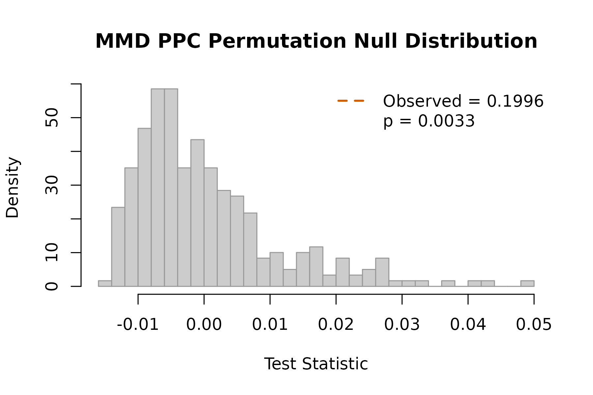

Posterior-Predictive Check with MMD
Max Moldovan
2026-06-25
Source:vignettes/kernR-ppc.Rmd
kernR-ppc.RmdThe question
After running an iterative ensemble smoother (PESTO, PEST++, EnKF, …) against historical observations, does the calibrated model produce a posterior-predictive distribution that is consistent with a held-out year or paddock?
The standard answer in PEST++-style workflows is RMSE on the posterior-predictive mean. That can only catch differences in central tendency. A distribution can match in mean but fail dramatically in variance, skewness, or tail probability – precisely the failures that matter for climate-risk decisions.
mmd_ppc() answers the distributional version of the
question: are the posterior-predictive draws and the held-out
observations samples from the same distribution? It is a model-free,
kernel two-sample test (MMD) plus a Bayesian-flavoured surprise
diagnostic.
The stub ensemble
Until PESTO ships its native manifest emitter, we construct a
pesto_ensemble object directly. This is the kernR-side
schema for the cross-package contract.
library(kernR)
# True data-generating distribution: bivariate (yield, biomass)
n_obs <- 30L
# Held-out observations from the "real" world
truth_mean <- c(yield = 4.5, biomass = 12.0)
truth_sd <- c(yield = 0.6, biomass = 1.5)
observed <- cbind(
yield = stats::rnorm(n_obs, truth_mean["yield"], truth_sd["yield"]),
biomass = stats::rnorm(n_obs, truth_mean["biomass"], truth_sd["biomass"])
)Case A: well-calibrated posterior
M <- 300L
post_good <- cbind(
yield = stats::rnorm(M, truth_mean["yield"], truth_sd["yield"]),
biomass = stats::rnorm(M, truth_mean["biomass"], truth_sd["biomass"])
)
ens_good <- pesto_ensemble(
posterior = post_good,
observed = observed,
metadata = list(holdout_year = 2018L, ies_iters = 6L)
)
ens_good
#>
#> PESTO ensemble manifest
#>
#> Posterior: 300 draws x 2 dims
#> Observed: 30 obs x 2 dims
#> Metadata: holdout_year, ies_iters
fit_good <- mmd_ppc(ens_good, n_permutations = 299L, seed = 1L)
fit_good
#>
#> MMD PPC Test
#>
#> Statistic: 0.00661733
#> P-value: 0.1900
#> N: 330
#> Perms: 299
#> Kernel X: rbf (bw = 1.736)
#>
#> PPC verdict
#> Posterior: 300 draws
#> Observed: 30 obs
#> Surprise: 2.396 bits
#> Verdict: consistent with observations
#> Metadata: holdout_year, ies_itersA small surprise_bits (well below
log2(B + 1)) and a verdict of consistent with
observations mean the calibrated model has not been falsified by
the held-out data at the distributional level.
Case B: miscalibrated posterior (variance too narrow)
A common ensemble-smoother pathology is over-confidence: posterior draws clustered too tightly around the posterior mean.
post_narrow <- cbind(
yield = stats::rnorm(M, truth_mean["yield"], truth_sd["yield"] / 3),
biomass = stats::rnorm(M, truth_mean["biomass"], truth_sd["biomass"] / 3)
)
ens_narrow <- pesto_ensemble(post_narrow, observed,
metadata = list(scenario = "narrow"))
fit_narrow <- mmd_ppc(ens_narrow, n_permutations = 299L, seed = 1L)
fit_narrow
#>
#> MMD PPC Test
#>
#> Statistic: 0.199572
#> P-value: 0.0033
#> N: 330
#> Perms: 299
#> Kernel X: rbf (bw = 0.6027)
#>
#> PPC verdict
#> Posterior: 300 draws
#> Observed: 30 obs
#> Surprise: 8.229 bits
#> Verdict: REJECT (posterior inconsistent with observations)
#> Metadata: scenarioThe verdict here should be REJECT, with surprise well above the
threshold of ~4.32 bits (the surprise corresponding to
p = 0.05).
Case C: miscalibrated posterior (mean-shifted)
post_shifted <- cbind(
yield = stats::rnorm(M, truth_mean["yield"] + 0.8, truth_sd["yield"]),
biomass = stats::rnorm(M, truth_mean["biomass"] - 1.2, truth_sd["biomass"])
)
ens_shifted <- pesto_ensemble(post_shifted, observed)
fit_shifted <- mmd_ppc(ens_shifted, n_permutations = 299L, seed = 1L)
fit_shifted
#>
#> MMD PPC Test
#>
#> Statistic: 0.245265
#> P-value: 0.0033
#> N: 330
#> Perms: 299
#> Kernel X: rbf (bw = 1.692)
#>
#> PPC verdict
#> Posterior: 300 draws
#> Observed: 30 obs
#> Surprise: 8.229 bits
#> Verdict: REJECT (posterior inconsistent with observations)Comparing surprise across scenarios
res <- list(
calibrated = fit_good,
narrow = fit_narrow,
mean_shifted = fit_shifted
)
data.frame(
scenario = names(res),
statistic = vapply(res, function(z) z$statistic, numeric(1)),
p_value = vapply(res, function(z) z$p_value, numeric(1)),
surprise_bits = vapply(res, function(z) z$surprise_bits, numeric(1)),
reject = vapply(res, function(z) z$reject, logical(1)),
row.names = NULL
)
#> scenario statistic p_value surprise_bits reject
#> 1 calibrated 0.006617331 0.190000000 2.395929 FALSE
#> 2 narrow 0.199572124 0.003333333 8.228819 TRUE
#> 3 mean_shifted 0.245265264 0.003333333 8.228819 TRUEVisual diagnostic
The inherited plot() method shows the permutation null
distribution with the observed MMD statistic marked:
plot(fit_narrow)
Notes on practice
-
Ensemble size. Distributional power is set by both
the ensemble size
Mand the held-out sample sizen_obs. For ag-scale problemsMin the low hundreds is usually sufficient;n_obs >= 20is a practical floor. -
Permutations. At
B = 299the minimum achievable p-value is1 / 300 ~ 0.0033; correspondingly the maximum surprise islog2(300) ~ 8.23bits. IncreaseBwhen working in the small-p regime. -
Interpreting surprise. Surprise is Shannon
information of the permutation p-value: 0 bits at
p = 1, 4.32 bits atp = 0.05, and capped atlog2(B + 1). It is not the strict Bayesian-surprise KL divergence; use it as an intuitive scalar verdict, not as a posterior probability. -
Multi-dimensional outputs.
mmd_ppc()handlesd > 1natively via the kernel choice; the default RBF with median-heuristic bandwidth is computed over the pooled posterior + observed sample.
Cross-package handoff
PESTO 0.3.0 ships a native ensemble emitter — the
PESTO::pesto_ensemble_manifest S7 class — which
mmd_ppc() consumes via a dedicated method. The legacy
lightweight pesto_ensemble S3 constructor is unchanged and
remains supported.
library(PESTO)
# Build a tiny synthetic manifest (in real workflows: come from
# pesto_ies_callback() + as_manifest()).
nreal <- 80L; nobs <- 3L
post <- matrix(rnorm(nreal * nobs), nreal, nobs)
colnames(post) <- paste0("o", seq_len(nobs))
m <- pesto_ensemble_manifest(
run_id = "vignette_demo",
params = data.frame(real_name = paste0("r", seq_len(nreal)),
p1 = rnorm(nreal),
p2 = rnorm(nreal),
check.names = FALSE),
outputs = data.frame(real_name = paste0("r", seq_len(nreal)),
post, check.names = FALSE),
weights = setNames(rep(1, nobs), colnames(post)),
obs_target = setNames(rnorm(nobs), colnames(post)),
data_hash = "sha256:vignette_demo",
pesto_version = as.character(packageVersion("PESTO")),
timestamp = Sys.time(),
method = "ies_callback",
noptmax = 1L,
lambda_schedule = 1
)
# Out-of-sample PPC: supply held-out observations explicitly. The
# manifest's `obs_target` slot is a single nobs-dim point (the data
# the posterior was fit to) and is not a valid two-sample comparator
# on its own.
held_out <- matrix(rnorm(20L * nobs), 20L, nobs)
colnames(held_out) <- colnames(post)
mmd_ppc(m, observed = held_out, n_permutations = 199L, seed = 1L)
#>
#> MMD PPC Test
#>
#> Statistic: -0.00916666
#> P-value: 0.7250
#> N: 100
#> Perms: 199
#> Kernel X: rbf (bw = 2.25)
#>
#> PPC verdict
#> Posterior: 80 draws
#> Observed: 20 obs
#> Surprise: 0.464 bits
#> Verdict: consistent with observations
#> Metadata: run_id, pesto_version, method, outputs_used, fidelityThe outputs = argument focuses the check on specific
observation columns (parallel to dr_date_scenario()’s
convention).